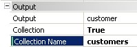
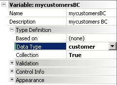

As you may already know, the output of a Data Provider is an SDT or BC (that could be later -even immediately- converted to another format such as XML). The only output formats supported are SDT and BC. However, not only a simple SDT or BC can be returned, but also a collection of them. Using a Data Provider in another GeneXus objects is similar to using a Procedure that returns an SDT or BC to the caller. ExampleAn easy way to implement an RSS feed is defining a Procedure that calls a Data Provider to populate the data and returns an XML with the RSS format: &rss = rss() // RSS() is a DP that load the data &response.addstring(&rss.toxml(true)) Notes:
When the output is a Business ComponentUsually, the Data Provider Output is an SDT, but some times it is very convenient to use a Business Component as the Output. For example for the following Data Provider 'CustomersProvider' the Output is the 'Customer' BC, the 'Collection' property is set to 'True', and the 'Collection Name' property is set as 'customers' (exactly the name given to the root Group in the Source).  Notes
customers
{
customer
{
CustomerId = 400
CustomerName = 'Mike Hemingway'
}
customer
{
CustomerId = 401
CustomerName = 'Jeniffer Faulkner'
}
}
So, in a procedure, we could define a '&myCustomersBC' variable with 'Customer' BC data type and with the 'Collection' property set to True (see Collection variables): 
&myCustomersBC = CustomersProvider()
For &customer in &myCustomersBC
&customer.Save()
endfor
That is, the two-item collection returned by the 'CustomerProvider' Data Provider is scanned and each time, in the '&customer' variable (of the 'Customer' BC data type) each item is loaded and a Save is done, having a new record on the database customers table. Important: It isn't necessary to define the '&myCustomersBC' variable, you just can write (see For in command):
For &customer in CustomersProvider()
&customer.Save()
endfor
ParametersThe Data Provider also supports receiving parameters (all parameters are "IN" parameters). Example: &CustomerId = 1 &Tabs = Tabs(&CustomerId) Suppose that you define a &Tabs variable of TABS type, which is an SDT associated with the Output property of the Data Provider named "Tabs". How to work with the items of a collection returned by a Data ProviderYou just write the following:
For &Var in Dataprovider(parameters list)
&Var.SomeElement
Endfor
This avoids having to define a collection variable and writing the following:
&Collection = Dataprovider(parameters list)
For &Var in &Collection
&Var.SomeElement
Endfor
See also For in Command.
ExampleAnother example could be to show a tree from a transaction structure through an SDT.
TreeNodeCollection
{
TreeNode
where CategoryParentId = &CategoryId when not &CategoryId.IsEmpty()
{
Id = CategoryId.ToString()
Name = CategoryName
Nodes = CategoriesDP(CategoryId)
}
TreeNode
where CategoryId = &CategoryId
{
Id = CategoryItemId.ToString()
Name = CategoryItemName
}
}
|
| Backlinks | ||
| Collection property | Category:Data Provider object | Example: 'CustomersProvider' Data Provider |
| Output property |